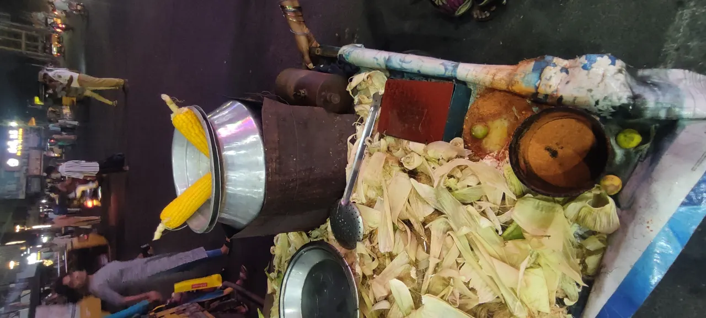

단맛은 칼질에서 시작됩니다

초당옥수수 솥밥은 재료가 단순해서 손질이 맛을 크게 좌우합니다. 알을 너무 깊게 베면 심지의 거친 맛이 섞이고, 너무 얕게 베면 알맹이가 부서집니다. 칼을 세워 옥수수 결을 따라 천천히 내리면 알의 모양이 살아 있고 밥 위에서 씹는 맛도 좋아집니다.
옥수수 심지는 버리지 않는 편이 좋습니다. 심지를 밥 위에 함께 올려 익히면 은은한 단맛과 향이 밥에 배어듭니다. 다만 심지 조각이 너무 크면 냄비 안 공간을 차지하니 반으로 잘라 넣는 정도가 적당합니다. 익힌 뒤에는 바로 빼면 됩니다.
초당옥수수는 수분이 많아 밥물을 평소보다 조금 줄이는 편이 안전합니다. 쌀을 충분히 불렸다면 물을 아주 많이 잡을 필요가 없습니다. 옥수수에서 나오는 수분까지 계산해야 밥알이 질척하지 않고 고슬하게 익습니다.
쌀은 먼저 숨을 쉬어야 합니다
솥밥에서 쌀 불림은 건너뛰기 쉬운 단계지만 결과 차이가 큽니다. 쌀이 물을 충분히 머금어야 짧은 가열 시간에도 속까지 고르게 익습니다. 여름에는 20분 안팎, 겨울에는 30분 정도 불리면 밥알이 단단하게 남지 않습니다.
물 조절은 냄비와 불 세기에 따라 조금 달라집니다. 두꺼운 냄비는 열을 오래 품고, 얇은 냄비는 바닥이 빨리 달아오릅니다. 처음에는 평소 밥물보다 약간 적게 잡고, 뜸 시간을 넉넉히 주는 편이 초당옥수수의 단맛을 살리기 좋습니다.
소금은 아주 조금만 넣어도 단맛을 또렷하게 만듭니다. 많이 넣으면 반찬 없이 먹기에는 짜질 수 있으니 한 꼬집 정도가 충분합니다. 버터간장을 곁들일 예정이라면 밥 자체의 간은 더 가볍게 잡는 것이 좋습니다.
버터간장은 불을 끈 뒤입니다
버터와 간장을 처음부터 넣고 끓이면 향은 강하지만 밥알이 무거워질 수 있습니다. 초당옥수수 솥밥에서는 밥이 다 익고 뜸이 끝난 뒤 버터를 올려 녹이는 편이 좋습니다. 잔열로 천천히 녹아야 옥수수 단맛과 버터 향이 따로 놀지 않습니다.
간장은 바로 붓기보다 작은 그릇에 버터, 간장, 다진 쪽파를 섞어 곁들이면 조절하기 쉽습니다. 가족마다 짠맛 취향이 다르기 때문에 밥 전체에 한 번에 섞는 것보다 각자 덜어 먹는 방식이 실패가 적습니다.
고소함을 더하고 싶다면 깨를 손으로 살짝 으깨 넣으면 향이 살아납니다. 김가루를 넣을 때는 마지막에 올리는 편이 눅눅해지지 않습니다. 초당옥수수의 단맛이 주인공이므로 양념은 과하게 누르지 않는 것이 좋습니다.
남은 밥은 주먹밥이 됩니다
갓 지은 솥밥은 밥알을 세게 누르지 말고 아래에서 위로 가볍게 섞어야 합니다. 옥수수 알이 으깨지지 않게 넓은 주걱으로 뒤집듯 섞으면 보기에도 좋고 식감도 살아납니다. 바닥에 누룽지가 생겼다면 따로 긁어 두었다가 마지막에 나눠 먹으면 좋습니다.
남은 밥은 식힌 뒤 주먹밥으로 만들기 좋습니다. 버터간장을 조금 더하고 김가루, 깨, 다진 쪽파를 섞으면 다음 끼니에도 맛이 흐트러지지 않습니다. 냉장 보관한 밥은 전자레인지에 데울 때 물을 아주 조금 뿌리면 밥알이 다시 부드러워집니다.
초당옥수수 솥밥은 반찬을 많이 준비하지 않아도 식탁의 중심이 됩니다. 구운 김, 오이무침, 맑은 된장국처럼 가벼운 반찬이 잘 어울립니다. 단맛이 강한 재료라 매운 반찬을 곁들이면 균형이 더 좋아집니다.
관련 영상
옥수수밥 맛있게 짓는 법
초당옥수수 솥밥의 맛은 특별한 양념보다 순서에서 나옵니다. 쌀을 불리고, 물을 조금 줄이고, 심지까지 넣어 향을 뽑은 뒤 뜸이 끝나고 버터간장을 더하면 단맛이 깔끔하게 살아납니다.
초당옥수수 솥밥은 단맛보다 뜸과 버터간장 타이밍이 중요합니다을 볼 때는 발표 직후의 반응보다 다음 분기까지 이어지는 숫자를 함께 확인하는 편이 좋습니다. 단기 뉴스는 방향을 빠르게 바꾸지만 실제 변화는 계약, 예산, 생산, 소비 습관처럼 느린 항목에서 굳어집니다. 이 차이를 나누어 보면 과장된 기대와 실제 지속 가능성을 구분할 수 있습니다.
가장 실용적인 점검 방법은 한 가지 지표에 기대지 않는 것입니다. 가격, 수요, 비용, 규제, 실행 시간이 같은 방향으로 움직이는지 확인해야 합니다. 어느 하나만 좋아도 나머지가 따라오지 않으면 결과는 늦어지고, 여러 조건이 동시에 맞으면 변화는 예상보다 빠르게 확산될 수 있습니다.
이 주제는 한 번의 결론보다 관찰 순서가 더 중요합니다. 먼저 현재 병목을 확인하고, 그다음 누가 비용을 부담하는지 보며, 마지막으로 그 부담이 가격이나 행동 변화로 이어지는지 봐야 합니다. 그렇게 읽으면 제목보다 구조가 먼저 보입니다.
초당옥수수 솥밥은 단맛보다 뜸과 버터간장 타이밍이 중요합니다을 볼 때는 발표 직후의 반응보다 다음 분기까지 이어지는 숫자를 함께 확인하는 편이 좋습니다. 단기 뉴스는 방향을 빠르게 바꾸지만 실제 변화는 계약, 예산, 생산, 소비 습관처럼 느린 항목에서 굳어집니다. 이 차이를 나누어 보면 과장된 기대와 실제 지속 가능성을 구분할 수 있습니다.
가장 실용적인 점검 방법은 한 가지 지표에 기대지 않는 것입니다. 가격, 수요, 비용, 규제, 실행 시간이 같은 방향으로 움직이는지 확인해야 합니다. 어느 하나만 좋아도 나머지가 따라오지 않으면 결과는 늦어지고, 여러 조건이 동시에 맞으면 변화는 예상보다 빠르게 확산될 수 있습니다.
이 주제는 한 번의 결론보다 관찰 순서가 더 중요합니다. 먼저 현재 병목을 확인하고, 그다음 누가 비용을 부담하는지 보며, 마지막으로 그 부담이 가격이나 행동 변화로 이어지는지 봐야 합니다. 그렇게 읽으면 제목보다 구조가 먼저 보입니다.
초당옥수수 솥밥은 단맛보다 뜸과 버터간장 타이밍이 중요합니다을 볼 때는 발표 직후의 반응보다 다음 분기까지 이어지는 숫자를 함께 확인하는 편이 좋습니다. 단기 뉴스는 방향을 빠르게 바꾸지만 실제 변화는 계약, 예산, 생산, 소비 습관처럼 느린 항목에서 굳어집니다. 이 차이를 나누어 보면 과장된 기대와 실제 지속 가능성을 구분할 수 있습니다.
가장 실용적인 점검 방법은 한 가지 지표에 기대지 않는 것입니다. 가격, 수요, 비용, 규제, 실행 시간이 같은 방향으로 움직이는지 확인해야 합니다. 어느 하나만 좋아도 나머지가 따라오지 않으면 결과는 늦어지고, 여러 조건이 동시에 맞으면 변화는 예상보다 빠르게 확산될 수 있습니다.
이 주제는 한 번의 결론보다 관찰 순서가 더 중요합니다. 먼저 현재 병목을 확인하고, 그다음 누가 비용을 부담하는지 보며, 마지막으로 그 부담이 가격이나 행동 변화로 이어지는지 봐야 합니다. 그렇게 읽으면 제목보다 구조가 먼저 보입니다.